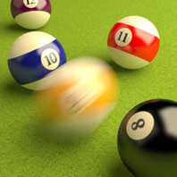
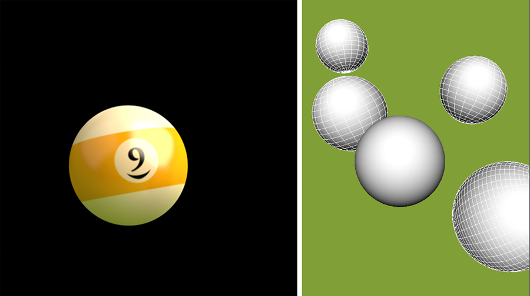
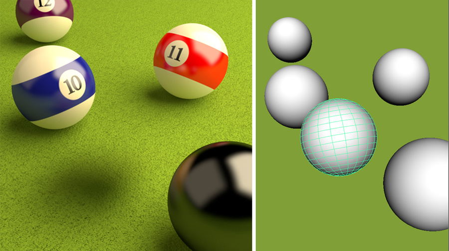
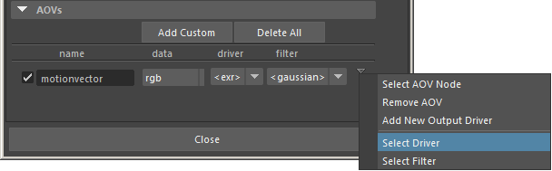
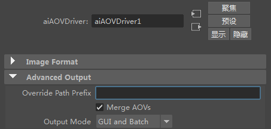
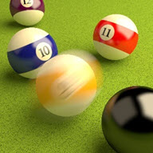
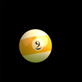
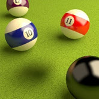

运动向量 AOV

使用 motion_vector AOV 的运动模糊
通常，建议使用自然运动模糊支持来实现 Arnold 中的运动模糊，在此情况下，在从摄影机的快门打开到快门关闭的一段时间内对象的变换和顶点将进行采样。这需要使用更多 AA 采样来解决运动模糊产生的噪波，但通常对于因景深、直接和间接照明、体积等产生的噪波，总是需要这些采样。在某些存在严格时间约束的情况下，输出运动向量 并随后在合成软件包中使图像变模糊可能会更快。这种类型的运动模糊保真度较低；它不会在对象移动时捕捉照明变化，也不会捕捉相对于摄影机的深度的复杂交互。但在某些情况下它可能足够了。
我们将演示如何在需要的情况下生成运动向量。有两种方法可以生成运动向量，一种是使用着色器，另一种是使用 Arnold 提供的内置 AOV。本教程旨在演示如何在台球场景中使用 motion_vector AOV。我们将对比真实 3D 运动模糊来讨论使用此技术的优缺点。motion_vector AOV 输出一个颜色通道，其中显示场景内的对象移动。后期处理软件可使用此 AOV 来计算 2D 运动模糊效果。优点是，其渲染速度通常比真实 3D 运动模糊更快。
创建台球渲染 在渲染运动向量 AOV 之前，我们必须先将台球与背景分离。我们将单独渲染台球（使用 motion_vector
在单独渲染台球之前，必须在“运动模糊”(Motion Blur) 设置中启用“瞬间快门”(Instantaneous Shutter) 。这是因为我们不希望渲染中出现运动模糊，但仍想在运动向量 AOV 中保留运动速度信息。
选择场景中的几何体（我们要进行运动模糊的台球除外），并禁用 primary_visibility 。您应该只看到单独渲染的台球。

台球渲染（对于场景的其余部分，禁用 primary_visibility ）
创建背景层
现在，对要进行运动模糊的台球禁用 primary_visibility 。渲染后，您应该会看到背景对象，且仅看到发生运动模糊的台球的阴影。

背景渲染（对于台球，禁用 primary_visibility ）
添加运动向量 AOV
激活台球渲染层后，在渲染设置(Render Settings) *窗口中选择“AOV”(AOVs)选项卡。在“AOV 浏览器”(AOV Browser)下，创建一个 *motionvector“最近”(Closest) 。
在“AOV”(AOVs)下，新创建的 motionvector AOV 右侧有一个向下箭头。单击此箭头，然后从菜单中选择“选择驱动程序”(Select Driver) 。

通过单击 motionvector 右侧的向下箭头来选择驱动程序
Arnold 驱动程序应显示在“属性编辑器”(Attribute Editor)中。启用“合并 AOV”(Merge AOVs)*。这会将 *motionvector AOV 与渲染的 EXR 合并为一个文件。

启用“合并 AOV”(Merge AOVs) 以将 AOV 存储在一个 EXR 文件中
合成
在后期处理软件包（本例中为 Nuke）中打开两个 EXR 文件。
将“向量模糊”节点连接至台球渲染。我们将使用向量模糊节点通过“运动向量 AOV”对台球进行模糊处理。
选择 VectorBlur 节点。将“uv 通道”(uv channels)更改为 *motionvector ，将“mv 预设”(mv presets) 更改为 Arnold 。启用 *uv alpha 并选择 rgba.alpha*，以防止模糊被 *motionvector AOV 的 Alpha 剪裁。

向量模糊：Alpha 禁用：不正确
向量模糊：Alpha 启用：正确
使用“合并”(merge)节点（操作设置为“覆盖”(over)），其 A 输入作为向量模糊，其 B 输入作为背景渲染。
最后，应该会看到台球渲染已合成到背景渲染中，如下所示：


使用运动向量 AOV 渲染台球
背景渲染
台球合成到背景中
限制 相较于渲染 Arnold 的原生 3D 运动模糊，渲染 2D 运动向量时存在一些限制。其中部分限制包括反射曲面中的运动模糊、变形模糊、无真实 3D 运动模糊效果（如未面向摄影机的轮子旋转）、使用运动模糊光源的延时效果。
运动向量 AOV 在处理变形运动模糊方面存在问题。如果您需要为变形运动模糊渲染适当的运动向量 AOV，必须创建一个自定义 AOV，并为其附加 motion_vector 着色器。